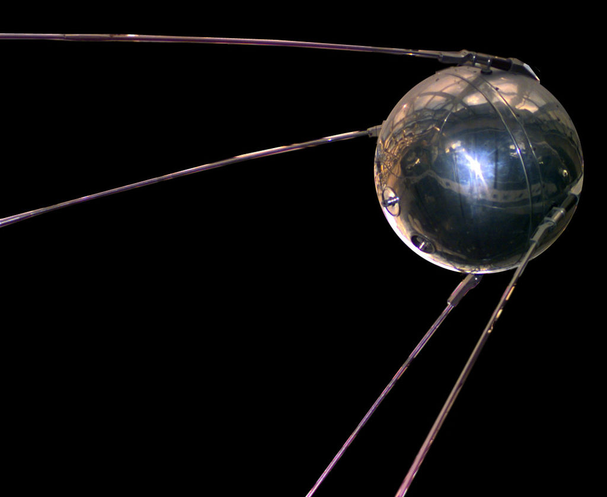
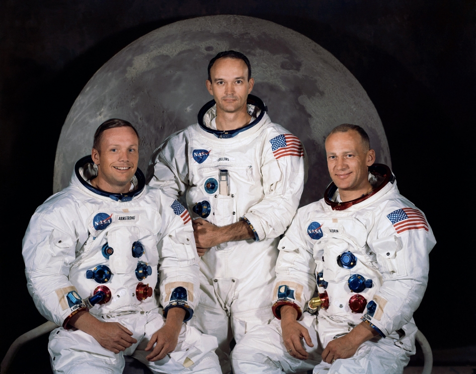

Tech: Now and Then

8 March 2021
A picture of one of the astronauts of Apollo 11 on the moon.
Space exploration is one of the most fascinating things that we've been able to do. We somehow made it outside of our entire planet, and into a soundless void that you can't breathe in. We'd only dream of exploring the stars, but we're closer than ever. But how did it start? How did we get to the point where we can go into space? Well, that all starts in the Netherlands, with the only thing that got us close being a way to look towards the stars...
A portrait of Hans Lipperhey, the inventor of the first telescope.
Hans Lipperhey was the first one to get close to the stars, as he was able to invent the telescope in 1608. The telescope that he invented was the refracting telescope, which is still used today (even in the largest observatory telescopes)! The main reason why he was able to invent this is because he was an eyeglass manufacturer, so he was experienced in glass-making. After seeing his invention, Galileo improved it and distributed it to many more people, some of which were inspired to do more than look...

An image of the V-2 Rocket, the first device to cross the Kármán line.
The first device to get into "space" was the V-2 rocket, a guided ballistic missile that was invented by the Germans in 1944 as a "revenge weapon" against the Allies. These missiles could strike many other European countries at will, and about 9,000 people died from them. The missile production was eventually stopped by an Allied raid on the production centers and launch sites. The important thing for us though is that it reached the Kármán line (100km over sea-level), which meant that it is the first thing into what is considered space. The US eventually snagged their own V-2 rocket in 1949 and flew it into the line, but it was to study the space above.
An image of the Sputnik 1 artificial satellite, the first manmade object to enter orbit.
The first object to enter orbit was Sputnik 1 in 1957, a satellite that was not much more than a test to see what the atmosphere up there was like. It was sent by the USSR, and it created a lot of fear for many people due to that. It had 2 radio transmitters that could be heard by radios all over the world, and these radio signals were able to identify electron density of the ionosphere, or it could tell the pressure and temperature through encoded radio beeps. Sputnik 1 burned up on re-entry to the mesosphere.
The next major advancement was once again done by the USSR, which launched the Luna 2 rocket that reached the moon. This made them have the first spacecraft that reached another celestial body. The rocket had some instruments to conduct tests on its way to the moon, which were helpful in determining the electron spectrum in the Van Allen radiation belt, or the areas where electrons were found in the earth's gravitational pull. Once it reached the moon though, it pretty much crashed. The first soft landing wouldn't be done until 1966 with the Luna 9.

A crusty image of Yuri Gagarin, which is how launch control saw him. He was the first man to enter space.
Then, the next major advancement was once again done by the Soviet Union, which put a man named Yuri Gagarin into space and orbited him around the earth on 12, April 1961. The orbit lasted a whole 1 hour and 48 minutes, and he re-entered the atmosphere correctly and landed back on Earth. Granted, he experienced 8 g's on re-entry, or about 2.3 times the force of the average roller coaster loop. The major thing that this signified was that space travel was possible by humans.
There's some other notable achievements that the US and Soviets did. The Verera 1, owned by the USSR, did a flyby of Venus in 1961, but the one that actually returned data was the Mariner 2 by the US, which was flown in 1962. Then there was the Pioneer 6, launched by the US, that orbited the Sun in 1965.
An image of the Apollo 11 crew, which were the crew who first landed on the moon, as, you know, humans.
Finally, in 1969, the US actually got something in the space race. They got the Apollo 11 crew into space, which they went to the moon to collect data and also further humanity. This showed everyone that men could go on the moon and not experience many issues (other than some bone issues if they were there for too long).
The last major advancement in space travel would be the space station that the USSR put into orbit in 1971, the Salyut 1. Unfortunately, this space station also holds the record of the only deaths in space, caused by asphyxiation due to a broken valve upon leaving the station. The crew killed was the Soyuz 11, who had lived on the station for 23 days before the incident occurred. As such, the station re-entered and was eventually re-engineered into the Zvezda, which is still part of the ISS (International Space Station) to this day.
Besides probes reaching other planets and sending data back to Earth, there's not been many other space advancements. There is SpaceX's attempted commercialization of space and possible ideas of "space hotels" that could happen in the future, along with the possible colonization of Mars, but we'll just have to wait for those ones. In the end, space travel is really neat. I'll always look forward to the next advances in space travel.